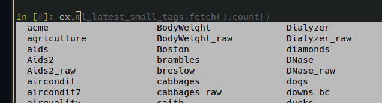

Ibis Sneak Peek: Examples
by Kae Suarez
Ibis has been moving quickly to provide a powerful but easy-to-use interface for interacting with analytical engines. However, as we’re approaching the 5.0 release of Ibis, we’ve realized that moving from not knowing Ibis to writing a first expression is not trivial.
As is, in our tutorial structure, work must be done on the user’s part — though we do provide the commands — to download a SQLite database onto disk, which can only be used with said backend. We feel that this put too much emphasis on a single backend, and added too much effort into picking the right backend for the first tutorial. We want minimal steps between users and learning the Ibis API.
This is why we’ve added the examples module.
Getting Started with Examples
This module offers in-Ibis access to multiple small tables (the largest is around only 30k rows), which are downloaded when requested and immediately read into the backend upon completion. We worked to keep pulling in examples simple, so it looks like this:
>>> import ibis
>>> import ibis.examples as ex
>>> t = ex.penguins.fetch()
>>> t.head()
┏━━━━━━━━━┳━━━━━━━━━━━┳━━━━━━━━━━━━━━━━┳━━━━━━━━━━━━━━━┳━━━━━━━━━━━━━━━━━━━┳━━━━━━━━━━━━━┳━━━━━━━━┳━━━━━━━┓
┃ species ┃ island ┃ bill_length_mm ┃ bill_depth_mm ┃ flipper_length_mm ┃ body_mass_g ┃ sex ┃ year ┃
┡━━━━━━━━━╇━━━━━━━━━━━╇━━━━━━━━━━━━━━━━╇━━━━━━━━━━━━━━━╇━━━━━━━━━━━━━━━━━━━╇━━━━━━━━━━━━━╇━━━━━━━━╇━━━━━━━┩
│ string │ string │ float64 │ float64 │ int64 │ int64 │ string │ int64 │
├─────────┼───────────┼────────────────┼───────────────┼───────────────────┼─────────────┼────────┼───────┤
│ Adelie │ Torgersen │ 39.1 │ 18.7 │ 181 │ 3750 │ male │ 2007 │
│ Adelie │ Torgersen │ 39.5 │ 17.4 │ 186 │ 3800 │ female │ 2007 │
│ Adelie │ Torgersen │ 40.3 │ 18.0 │ 195 │ 3250 │ female │ 2007 │
│ Adelie │ Torgersen │ nan │ nan │ NULL │ NULL │ NULL │ 2007 │
│ Adelie │ Torgersen │ 36.7 │ 19.3 │ 193 │ 3450 │ female │ 2007 │
└─────────┴───────────┴────────────────┴───────────────┴───────────────────┴─────────────┴────────┴───────┘Another advantage of this new method is that we were able to register all of them so you can tab-complete, as you can see here:

Once you’ve retrieved an example table, you can get straight to learning and experimenting, instead of struggling with just getting the data itself.
In the future, our tutorials will use the examples module to to help speed up learning of the Ibis framework.
Interested in Ibis? Docs are available on this very website, at:
and the repo is always at:
Please feel free to reach out on GitHub!